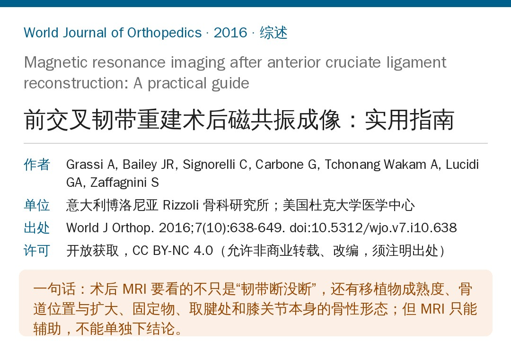
🔖原文信息（编者中文重排）
📚 文献信息
▪ Grassi A, Bailey JR, Signorelli C, Carbone G, Tchonang Wakam A, Lucidi GA, Zaffagnini S. Magnetic resonance imaging after anterior cruciate ligament reconstruction: A practical guide. World J Orthop. 2016;7(10):638-649. doi:10.5312/wjo.v7.i10.638
▪ 中文题目：前交叉韧带重建术后磁共振成像：实用指南
▪ 作者单位：意大利博洛尼亚 Rizzoli 骨科研究所生物力学实验室；美国杜克大学医学中心骨科
▪ 文章类型：特邀综述（以读片和测量方法为主线，配 17 幅 MRI 病例图）
前交叉韧带重建是全世界最常做的骨科手术之一，整体效果不错，但仍有 6%～12% 会出现移植物断裂或临床失败。术前做 MRI 是为了确认韧带断了、看有没有合并伤；术后做 MRI，问题就多了：移植物“亮”是正常成熟还是坏了？骨道打得对不对？骨道变大要不要紧？取腱的地方长回来没有？
这篇综述的特点是把术后 MRI 该看的东西一次列全：移植物信号、完整性、骨道位置和倾角、骨道扩大、固定物、取腱处，再到胫骨平台后倾、髁间窝大小这些“膝关节本身的危险因素”，而且每一项都配了测量示意图。
对康复治疗师来说，读懂这些，拿到患者的术后 MRI 报告时就知道每个词意味着什么，也更能理解为什么同样术后 6 个月，有人可以加量，有人要慢一点。
移植物放进关节后要经历缺血坏死 → 血管再生 → 细胞增殖 → 重塑四个阶段，可持续 24 个月以上，最终在组织学和力学上接近原生前交叉韧带，这个过程叫“韧带化”。
MRI 可以间接监测这个过程：移植物信号越高，往往成熟度越差、力学越弱。高信号对应的是新生的、血管和细胞都很多的修复组织。
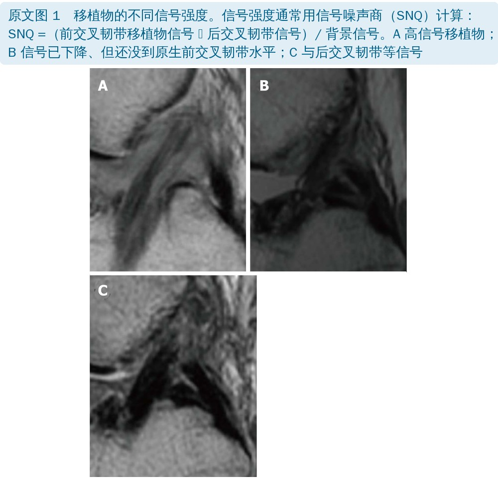
信号可以靠肉眼分级，也可以用软件算信号噪声商（SNQ）：拿移植物信号减去后交叉韧带信号，再除以背景信号。数值越接近后交叉韧带，说明越成熟。
| 移植物 | MRI 信号随时间的变化 |
|---|---|
| 骨—髌腱—骨 | 第 1 个月低信号（和原来的髌腱一样）；之后被滑膜包裹、血管长入，信号升高，可持续到 16～18 个月；然后很快接近原生韧带 |
| 腘绳肌腱（股薄肌 + 半腱肌） | 第 1 个月就不一定是低信号：多股编织，束间可积少量液体，骨道界面也可有液体，可持续到术后 1 年；之后成熟过程与髌腱类似。有研究发现术后 6 个月腘绳肌腱比带骨块的股四头肌腱成熟慢 |
| 同种异体 | 过程相似，但成熟慢得多，高信号可比自体移植持续更久，最长到 2 年 |
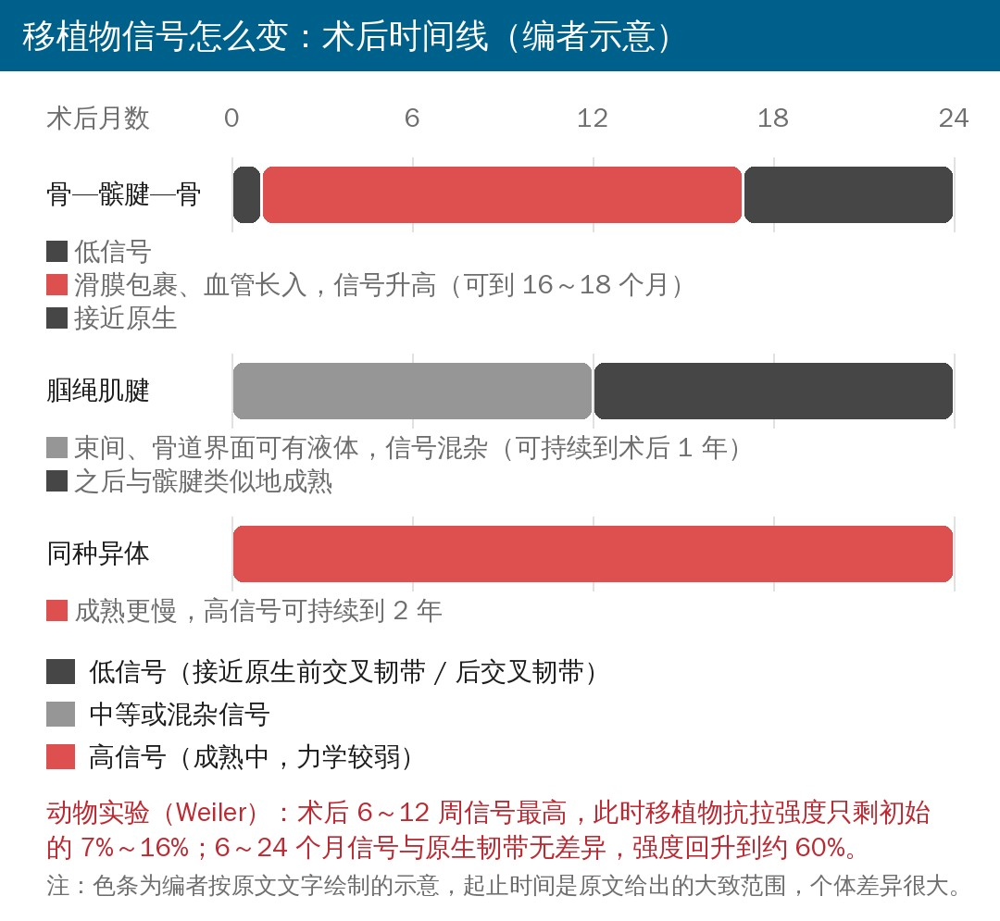
和康复的关系：动物实验里，术后 6～12 周信号最高，移植物抗拉强度只剩初始的 7%～16%；6～24 个月信号回落，强度回升到约 60%。原文作者也提到，有研究者建议按移植物成熟程度调整康复进度，以减少再损伤。
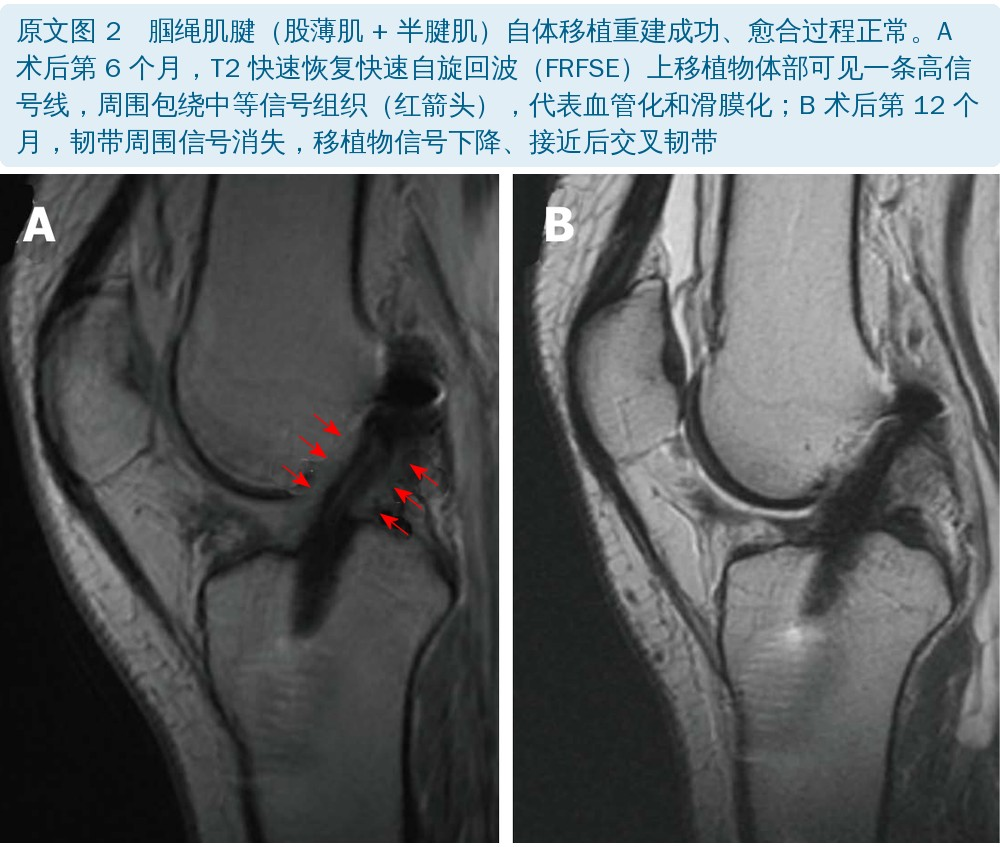
如果信号增高集中在移植物远端 2/3，要想到髁间窝撞击：伸膝时移植物顶到髁间窝顶。这和“独眼征”（Cyclops 病变）的形成有关，即移植物前方摩擦最重处形成的纤维结节，常表现为伸膝受限。
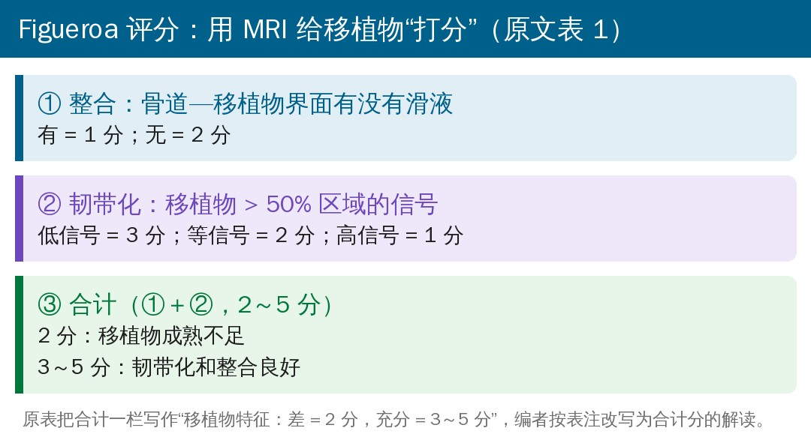
再断裂在 MRI 上表现为T2 上移植物体部信号增高，看不清正常走行。但 MRI 和查体、关节镜经常对不上：
• 50 例关节镜和查体都证实移植物损伤的翻修病例里，24% 在 MRI 上被判为“完整”
• MRI 与临床评估的不一致率为 52%，与关节镜的不一致率为 44%，隐匿起病（没有明确外伤）的更容易对不上
• 以关节镜为金标准，MRI 诊断移植物撕裂的敏感度 60%、特异度 87%
• 做 MR 关节造影可以把敏感度、特异度提到接近 100%
所以MRI 显示移植物“完整”，不代表没有松弛或拉长，一定要和查体、外伤史放在一起看。
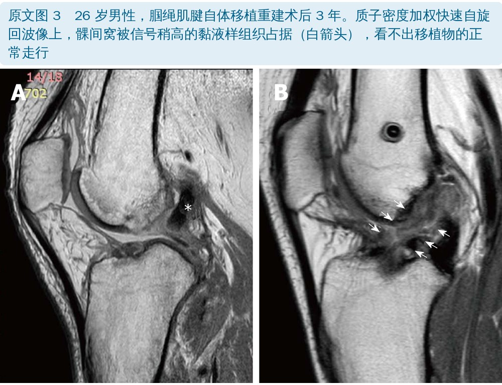
骨道位置是手术成败的关键一步，而 MRI 最能告诉我们的，是移植物的倾斜角度。
• 胫骨骨道：前缘应在 Blumensaat 线（髁间窝顶的切线）延长线之后，但不超过胫骨近端中点；骨道中心理想位置约在平台前后径的 42%（从胫骨前缘量起），原生前交叉韧带在 28%～63%，中心约 46%
• 太靠前：容易和髁间窝撞击，导致伸膝受限或独眼征
• 太靠后：移植物过于垂直，前后和旋转稳定都控制不好
• 股骨骨道：一般认为应在股骨后皮质线与髁间窝外侧壁的交点。最准确的评估靠关节镜，MRI 能发现明显的位置错误
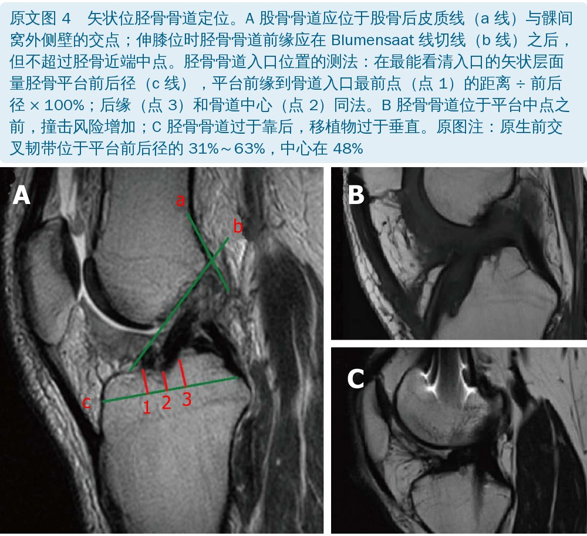
| 平面 | 正常 / 目标 | 研究中的“异常”数值 |
|---|---|---|
| 矢状位 | 原生 50°～60°，重建后不宜超过 60° | 失败待翻修者平均 69°；> 60° 者松弛更大（但这批美国职业橄榄球联盟选秀运动员的总体结果和重返高水平运动不受影响） |
| 冠状位 | < 75° | 术后 3 度松弛者平均 79.5° |
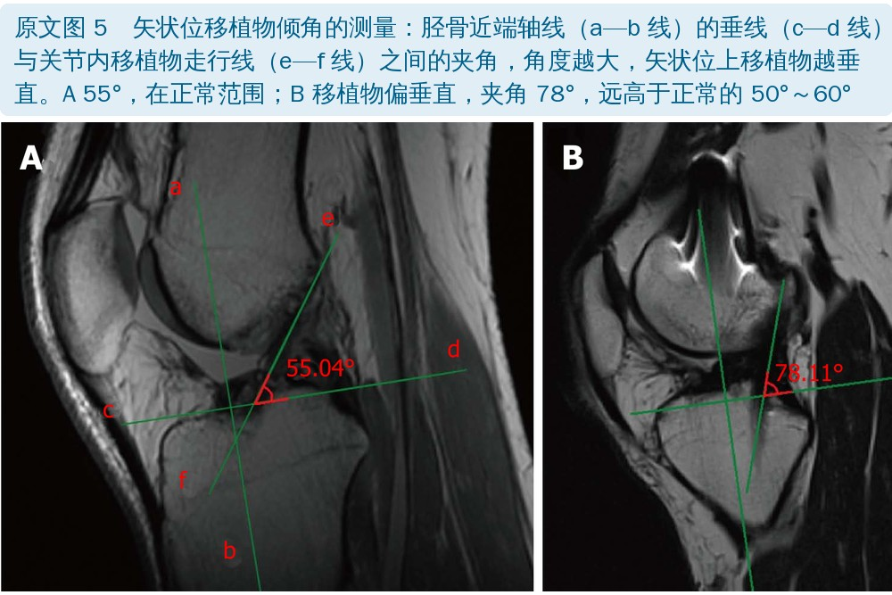
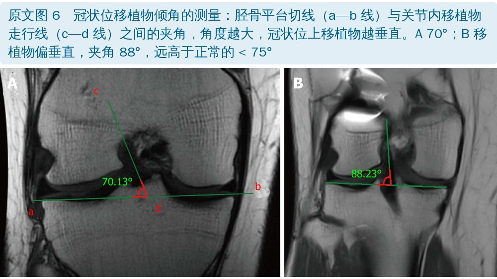
影响倾角的因素包括手术经验、膝关节解剖和术式。经胫骨打股骨骨道，移植物在矢状位上往往更垂直：一项研究里经胫骨技术平均 72°，经前内侧入路只有 53°。
• 测骨道扩大，CT 最可靠，MRI 最差：观察者内一致性 κ 值 CT 0.66、X 线 0.50、MRI 0.37；观察者间 0.65、0.39、0.32
• 翻修前要精确测量骨道：直径 > 15 mm 常需要分期翻修（先植骨，再重建）
• MRI 的长处是能看到骨道里的积液和囊肿；腘绳肌腱重建术后 1 年内，腱—骨道界面的液体高信号常可自行吸收
• 扩大多发生在术后前 3 个月，如果骨道位置没问题、移植物愈合正常，之后到 2 年基本稳定
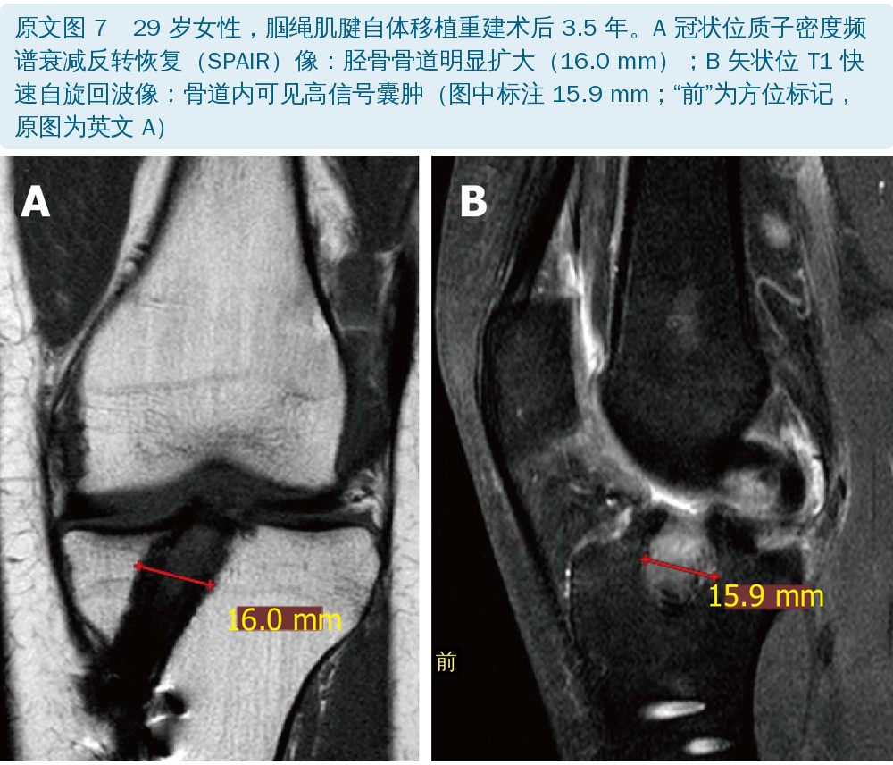
原因不完全清楚，可能是力学和生物学因素共同作用：
• 力学：骨道和移植物尺寸不匹配，移植物在骨道里前后晃（“雨刷效应”，多见于胫骨侧）或纵向伸缩（“蹦极绳效应”，腘绳肌腱配皮质悬吊固定、骨道长、结构刚度低时多见于股骨侧）；骨道位置不对也会带来异常应力
• 康复：腱—骨愈合期间的受力会影响移植物行为，原文认为过早、过激进的康复也可能参与骨道扩大
• 生物学：同种异体的亚临床免疫反应；滑液中的炎症因子溶骨；移植物术后肿胀约 12%，骨道内压力升高
目前骨道扩大短期内不影响临床结果，长期是否和松弛、再断裂有关还不清楚；但骨道太大会让翻修很麻烦。
• 金属螺钉会产生伪影，可通过降伪影软件、减薄层厚、调回波间隔或用 STIR（短时反转恢复）序列减轻；可吸收材料伪影少
• MRI 能清楚看到固定物松动、移位、断裂：挤压螺钉进关节损伤软骨；悬吊装置滑进骨道导致移植物张力下降；横穿钉移到软组织刺激肌腱
• 可吸收螺钉可能引起异物炎症反应，形成肉芽肿、削弱骨小梁
• 降解时间差别大：PLLA（聚左旋乳酸）及其羟基磷灰石复合钉可要 4 年；PDLLA（聚消旋乳酸）6～8 个月仍清楚可见、12～16 个月碎裂、22 个月后可完全吸收；PGA（聚乙醇酸）6～12 个月就完全吸收
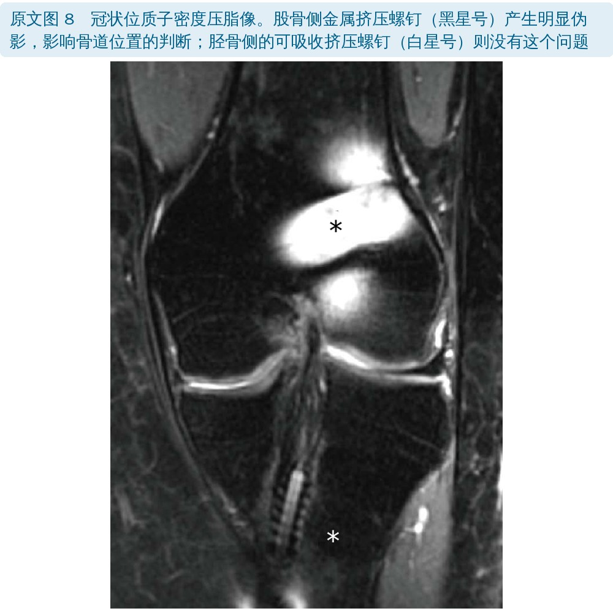
• 取中 1/3 后，髌腱在 T1、T2 上可增厚、信号增高
• 内外侧 1/3 之间可留有缝隙，会随时间变小；但也有研究在再次取腱 10 年后仍看到缺口，2～10 年间髌腱持续增厚
• 少见但可能：髌骨骨折、髌腱断裂、滑囊炎、血肿（再次取腱时更多见）
• Hoffa 脂肪垫可出现炎症反应：压脂 T2 高信号，是肥大和水肿
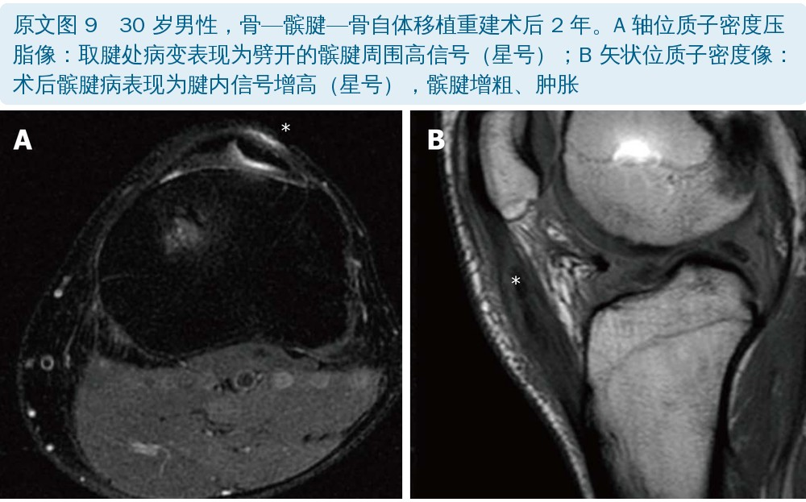
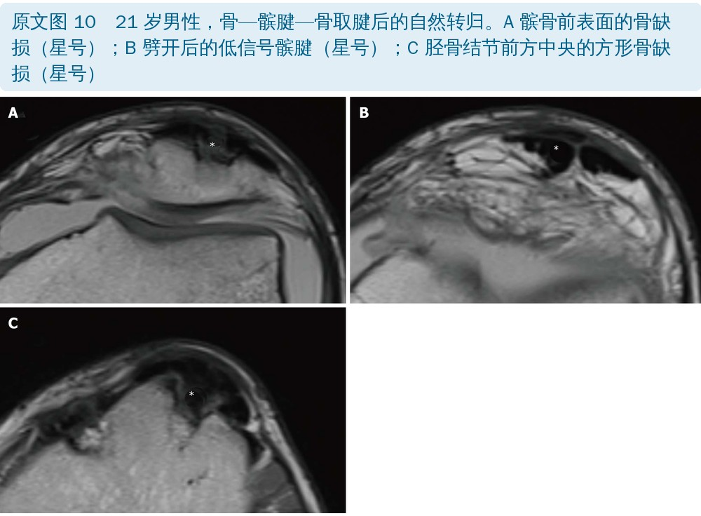
前间室另一个较常见的并发症是关节纤维化，即术后伸或屈受限的僵硬。可能和炎症没消退就手术、术后制动太久有关。MRI 上表现为移植物远端前方一片低—中等信号区，可弥漫，也可局限。
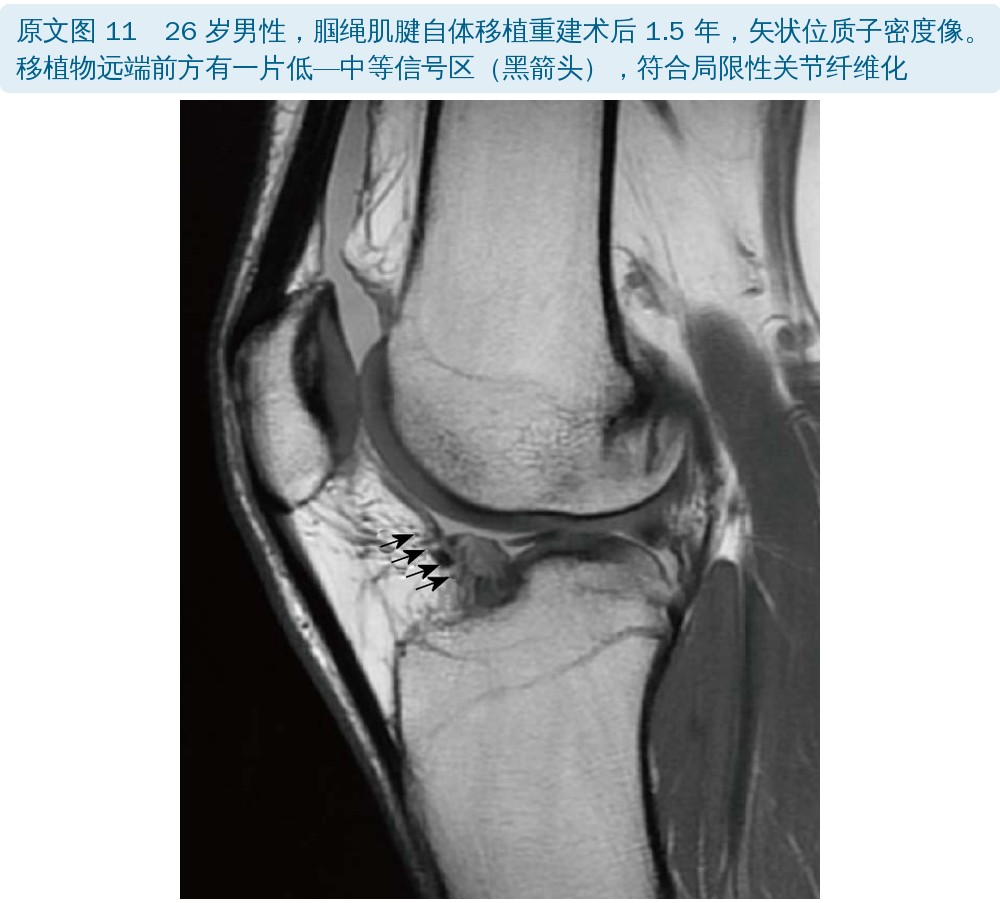
• 取腱处第 1 个月可有少量积液，12～18 个月完全消失
• 肌腱可以“再生”（原文称“蜥蜴尾效应”），但能否用于再次取腱存疑
• 2014 年一篇纳入 18 项研究的系统综述：半腱肌和股薄肌的平均再生率 ≥ 70%
• 更新的研究：半腱肌约 60% 在术后 3～6 个月完全再生，股薄肌只有约 30%；整个鹅足完全再生只有 10%，且常异位附着在关节线下 1～2 cm 的缝匠肌筋膜或腓肠肌内侧头；15% 两条肌腱都没有长回来
• 术后 2 年内肌腱先增粗、再逐渐变细，最多 90% 伴肌肉萎缩、回缩和脂肪浸润
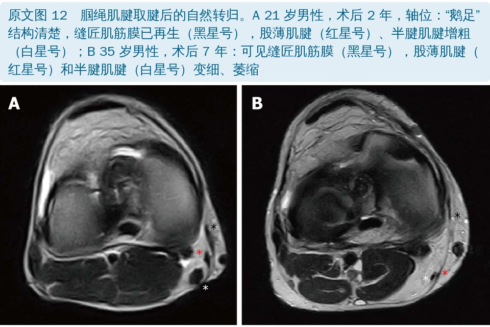
和康复的关系：这就是腘绳肌腱取腱后屈膝肌力、尤其深屈位肌力长期偏弱的影像学背景，做屈肌力量测试和训练时要把它考虑进去（编者补充）。
• 35 例早期移植物失败对比 35 例未失败：失败组外侧平台后倾更大（8.4° vs 6.5°）；后倾每增加 2°、4°、6°，失败风险的比值比分别为 1.6、2.4、3.8，女性更明显
• X 线研究：后倾 > 12° 的患者，移植物再断裂或对侧前交叉韧带损伤的发生率接近 60%
• 也有研究认为内侧平台后倾更重要，或者半月板后倾比骨性后倾更准；测量方法不统一，争议仍在。但“后倾越大，风险越高”是共识
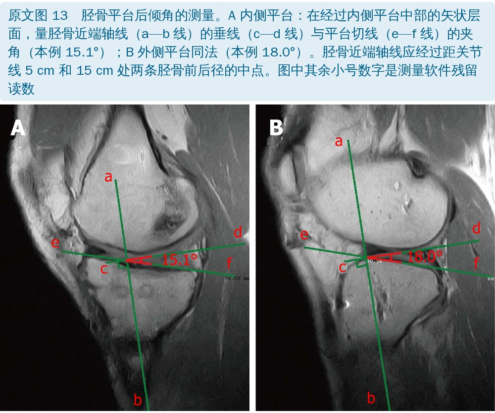
髁间窝窄是非接触性前交叉韧带损伤的危险因素，可能是窄髁间窝里的前交叉韧带本身就更小更弱。重建术后出现独眼征（撞击）的患者，髁间窝横截面积更小（251.7 mm² vs 335.6 mm²）。
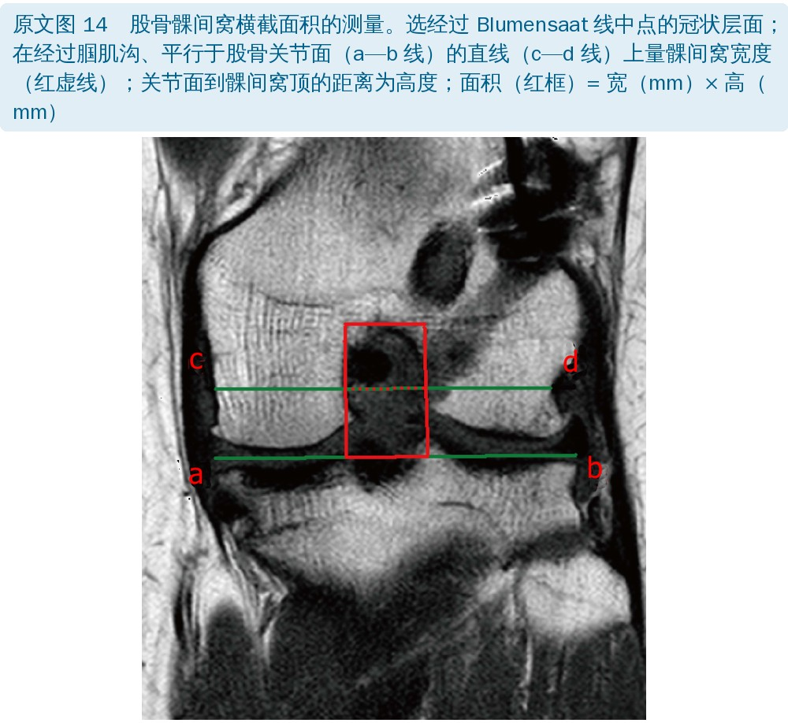
重建失败的患者在 MRI 上可见外侧间室胫骨前移位，平均 5.7 mm，12.5% 超过 15 mm；比正常膝多 3.9 mm，比急性前交叉韧带撕裂的膝多 3.1 mm。内侧间室没有这种差异。这可能是翻修效果不理想的一个力学解释。
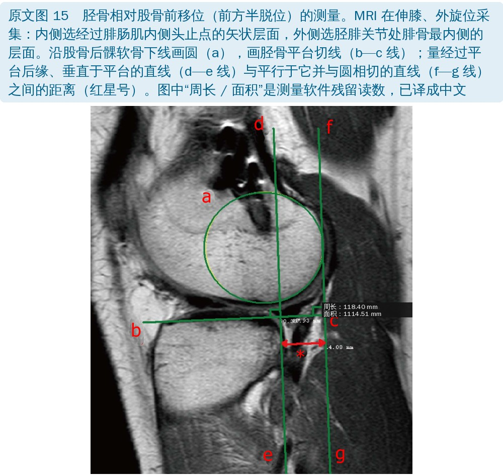
在前交叉韧带断裂的膝里，轴移试验 Ⅱ 度的患者外侧胫骨平台更窄（原文数值为 35.5 mm vs 30.3 mm），只在女性中有统计学意义。骨性形态会影响松弛程度，这类患者重建后效果可能偏差，术前松弛明显时可考虑加做外侧关节外成形。
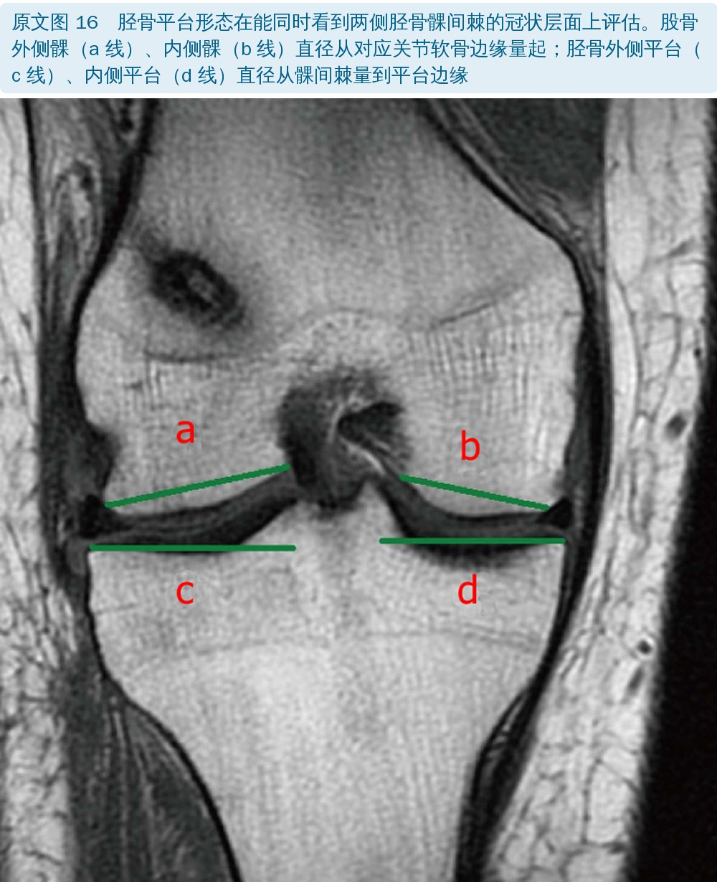
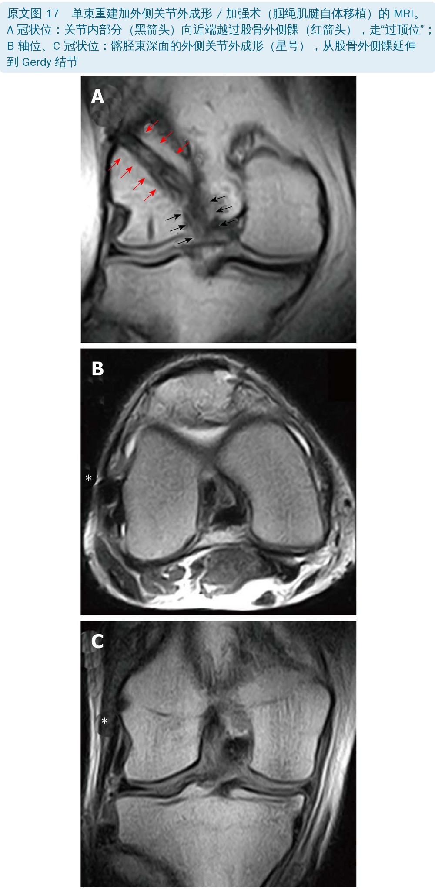
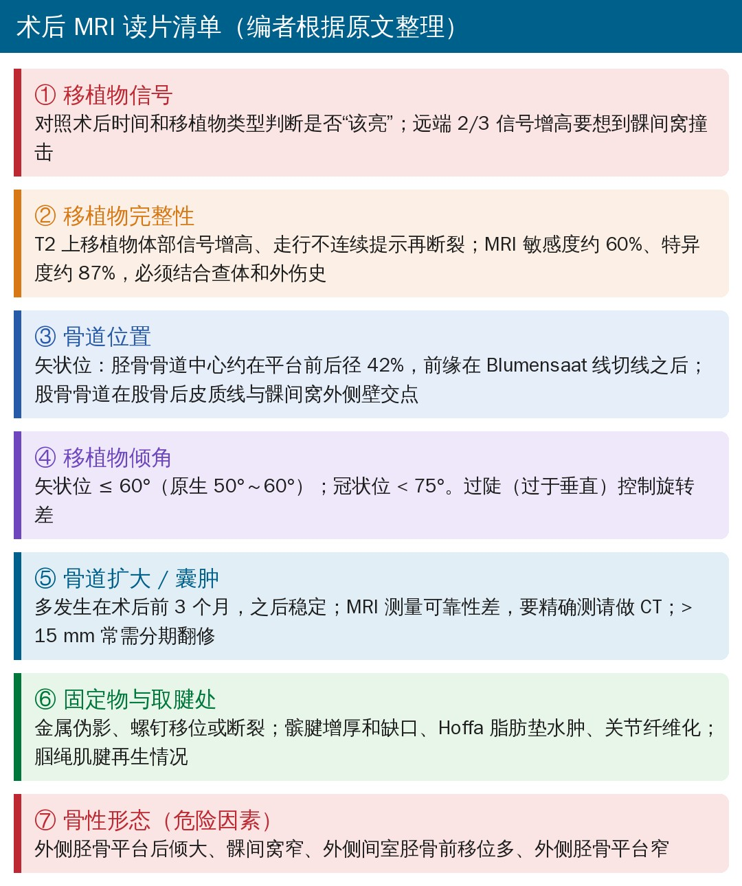
• 文章类型是特邀叙述性综述：没有系统检索和质量评价，作者结合文献和自家病例写成，适合当读片框架，不适合当高等级证据
• 很多数字来自单个小样本研究：如成熟度时间线部分来自动物实验，后倾、髁间窝、胫骨前移位都是几十例的回顾性研究
• 病例图都是典型例：真实读片中边界情况多，测量值也受层面选择、序列和测量者影响
• 原文作者自己也强调：MRI 不能单独用来判断术后状态，必须结合查体和病史
• 发表于 2016 年，此后关于移植物成熟度定量（如 SNQ 与重返运动）的研究又有不少新进展，本文没有覆盖
• 胫骨骨道的百分比前后不一：正文写原生前交叉韧带在平台前后径的 28%～63%、中心 46%，图 4 图注写的是 31%～63%、中心 48%
• SNQ 的全称写错了：图 1 图注把 SNQ 解释为“signal-digital noise ratio”，缩写表里又写成“Symbol of national quality”；正文其他地方用的是“signal/noise quotient”（信号噪声商），本文按后者翻译；公式里的“PCL graft signal”也应是后交叉韧带（不是移植物）的信号
• 图 4 的 b 线一线两用：图注先说 b 线是 Blumensaat 线的切线，又说 b 线是髁间窝外侧壁
• 图号引用不准：正文说骨道太靠后导致移植物垂直见“图 4”，应为图 4C；关节纤维化段落引用“表 1”，但表 1 是 Figueroa 评分，与关节纤维化无关
• Musahl 研究的数字顺序：正文说 Ⅱ 度轴移的患者外侧平台“更窄”，括号里却写“35.5 mm vs 30.3 mm”，按顺序读是 Ⅱ 度更宽，顺序可能写反了，本文照录原文数值
• Figueroa 评分的描述：表注说评分是“2 项之和”，但表里列了 3 项，第 3 项其实是前两项的合计
• 图 13 的示例数值：图中内外侧平台后倾 15.1°、18.0°，远高于正文引用研究中的 6.5°～8.4°，测法或层面可能不同，别拿来直接对照
• 小笔误：“turbo-shin echo”应为 turbo-spin echo；“mixoid”应为 myxoid（黏液样）
• 术后 6～12 个月报告写“移植物信号增高”：先看移植物类型和术后时间，多半是正常韧带化；同种异体可以“亮”到 2 年
• 信号高说明还在成熟期，力学偏弱：重返跑跳、变向时，影像可以作为参考之一，但不能代替功能测试
• 报告写“移植物完整”，但患者查体松弛、有打软腿：别被报告安慰，MRI 敏感度只有约 60%，及时回转手术医生
• 伸膝总差最后几度、膝前痛：想到独眼征、髁间窝撞击、胫骨骨道太靠前或局部关节纤维化，报告里留意“移植物远端前方结节 / 低信号区”
• 报告写“骨道扩大”：多出现在术后前 3 个月，多数之后稳定；早期康复注意循序渐进，不必过度紧张
• 腘绳肌腱取腱者：股薄肌常长不回来，肌肉可萎缩、脂肪化，屈膝肌力（尤其深屈位）要长期练、定期测
• 髌腱取腱者：髌腱增厚、信号增高可持续多年，膝前痛、跪地痛时结合 Hoffa 脂肪垫和髌腱情况评估
• 外侧平台后倾大、髁间窝窄的患者：属于再断裂高风险，重返运动的标准可以更严格
欢迎关注骨科康复小黄公众号，获取更多物理治疗的专业知识！
📄参考文献：
Grassi A, Bailey JR, Signorelli C, Carbone G, Tchonang Wakam A, Lucidi GA, Zaffagnini S. Magnetic resonance imaging after anterior cruciate ligament reconstruction: A practical guide. World J Orthop. 2016;7(10):638-649. doi:10.5312/wjo.v7.i10.638
原文 © The Author(s) 2016，由 Baishideng Publishing Group 出版，以知识共享署名—非商业性使用 4.0 国际许可（CC BY-NC 4.0，http://creativecommons.org/licenses/by-nc/4.0/）开放获取。本文为非商业学术交流用的中文解读。相对原文的改动：原文图 1～17 为 MRI 图像，图内面板字母、测量线字母、数字和星号原样保留（仅等比缩放），图 7B 的方位标记和图 15 测量软件残留的英文读数已原位译成中文，中文图注为编者翻译；表格为编者根据原文正文和表 1 翻译整理；首图、移植物信号时间线、Figueroa 评分卡、读片清单卡和封面为编者根据原文绘制。版权归原作者与期刊，如有侵权请联系删除。